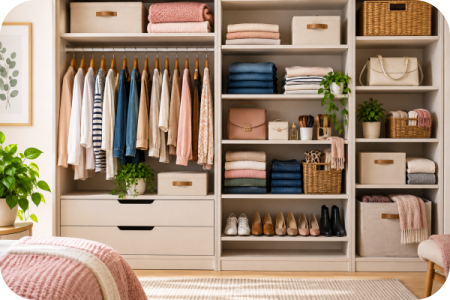
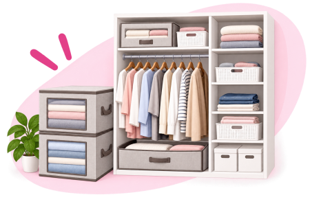
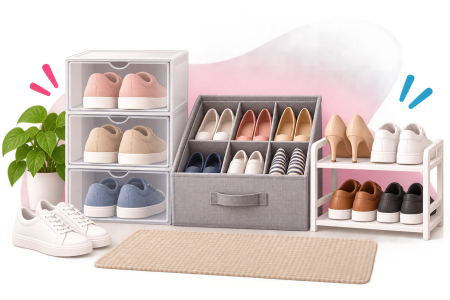
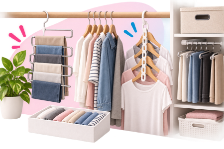

Um guarda-roupa pequeno pode parecer ainda menor quando roupas, sapatos, bolsas e acessórios disputam o mesmo espaço.
Mas antes de pensar em comprar outro armário ou encher o guarda-roupa de caixas e organizadores, vale começar pelo mais simples: entender o que está ocupando espaço e como você realmente usa suas coisas.
Muitas vezes, reorganizar o que já existe pode tornar o espaço bem mais funcional.
1. Antes de organizar, tire o excesso
O primeiro passo não é dobrar. É separar.
Retire as peças e aproveite para olhar aquilo que ficou esquecido no fundo do armário.
Separe o que você usa, o que precisa de algum reparo e aquilo que já não faz sentido manter.
Roupas em boas condições que você não utiliza mais podem ser destinadas à doação ou a outra forma de reaproveitamento.
A ideia não é jogar coisas fora apenas para deixar o armário bonito. É evitar que aquilo que você não usa ocupe o espaço das coisas que fazem parte da sua rotina.
Antes de procurar mais espaço, descubra o que realmente precisa ficar nele.
2. Nem toda roupa precisa de cabide
Depois da triagem, observe o tipo de roupa que você possui.
Camisas, vestidos, casacos e algumas peças que amassam com facilidade podem fazer mais sentido no cabide.
Camisetas, roupas de dormir, jeans e outras peças que podem ser dobradas podem ocupar gavetas ou prateleiras.
Não existe uma única divisão correta para todo mundo. Quem usa muitos vestidos precisa de um armário diferente de quem vive de camiseta e calça jeans.
O guarda-roupa precisa acompanhar a sua rotina — e não o contrário.
3. O que você mais usa deve ser o mais fácil de pegar
Uma regra simples ajuda bastante:
Usa sempre? Deixe na área mais acessível.
Usa de vez em quando? Pode ficar em prateleiras intermediárias.
Usa raramente ou somente em determinada época do ano? Pode ocupar as partes mais altas ou menos acessíveis.
Isso evita aquela situação clássica: retirar metade do guarda-roupa para alcançar justamente a camiseta que você usa toda semana. 😂
4. Faça gavetas e prateleiras trabalharem melhor
Uma gaveta cheia não significa necessariamente uma gaveta bem aproveitada.
Peças pequenas podem ser separadas por categoria: roupas íntimas, meias, acessórios e outros itens.
Quando fizer sentido para o tipo de roupa, algumas peças também podem ser dobradas e posicionadas de maneira que você consiga enxergar várias delas sem precisar desmontar toda a pilha.
O objetivo não é aprender uma “dobra perfeita”. É conseguir ver o que você tem e retirar uma peça sem bagunçar todas as outras.
Divisórias ou pequenos compartimentos podem ajudar, principalmente com itens menores, mas não são obrigatórios.

5. Sapatos, bolsas e acessórios também precisam de endereço
Às vezes, o problema nem está nas roupas.
Sapatos espalhados, bolsas empilhadas, cintos, lenços e outros acessórios acabam ocupando espaços que poderiam ser melhor utilizados.
Tente definir uma área para cada categoria.
Sapatos podem ficar concentrados na parte inferior ou em um espaço específico. Bolsas podem ocupar uma prateleira. Itens menores podem ficar reunidos em um compartimento ou organizador.
O importante é que cada grupo tenha um lugar definido. Quando sabemos onde guardar, também fica mais fácil devolver cada coisa ao lugar depois de usar.
6. Roupas de outra estação não precisam do melhor lugar
Casacos pesados, cobertores e peças utilizadas apenas em determinadas épocas do ano não precisam disputar a área mais acessível com as roupas do cotidiano.
Se o espaço permitir, esses itens podem ficar nas partes superiores do guarda-roupa ou em caixas adequadas ao armazenamento.
Antes de guardar uma peça por um período prolongado, ela deve estar limpa e completamente seca.
Para roupas sazonais, caixas e outras soluções de armazenamento podem ajudar a manter as peças organizadas e protegidas da poeira enquanto não estão sendo usadas.
7. Agora sim: será que você precisa comprar alguma coisa?
Depois de organizar, observe o que ainda não funcionou.
Faltou espaço para roupas pequenas? Os sapatos continuam sem lugar? As bolsas estão ocupando uma prateleira inteira? Há muita altura desperdiçada entre duas prateleiras?
Só depois de identificar o problema vale pesquisar uma solução.
E antes de comprar qualquer organizador: MEÇA O ESPAÇO.
Altura, largura e profundidade.
Parece óbvio, mas é justamente isso que evita comprar aquela caixa maravilhosa que chega em casa... e não entra no armário. 😂
Escolhas da Lu
Qual problema você quer resolver? Veja opções e compare o que realmente combina com o seu espaço e a sua necessidade.

Organizar o guarda-roupa Ver opções →
Organizar sapatos Ver opções →
Aproveitar melhor os cabides Ver opções →Publicidade | Link de afiliado — os produtos, preços e disponibilidade são definidos pelos vendedores e podem mudar. Compare medidas, características e opções antes de comprar.
Não organize pensando na foto. Organize pensando no dia seguinte.
Se para pegar uma camiseta você precisa retirar três caixas, levantar uma pilha e mover duas bolsas, provavelmente aquela organização não ficou prática para a sua rotina.
O melhor sistema é aquele que você consegue usar e manter no dia a dia.
Para terminar...
Um guarda-roupa pequeno não precisa guardar tudo do mesmo jeito. Algumas peças funcionam melhor penduradas. Outras, dobradas.
Itens usados diariamente precisam estar acessíveis, enquanto aquilo que aparece poucas vezes durante o ano pode ocupar áreas menos disputadas.
E você não precisa reorganizar tudo de uma vez. Pode começar por uma gaveta, uma prateleira ou uma categoria de roupas.
O objetivo não é ter um armário perfeito. É abrir a porta e conseguir encontrar o que procura.
Fontes consultadas
As orientações desta matéria foram preparadas a partir de princípios práticos de organização e de materiais de referência sobre planejamento e aproveitamento do espaço no guarda-roupa.
IKEA — Como escolher o sistema de arrumação para roupa ideal
Orientações sobre medição do espaço, tipos de peças e planejamento
da capacidade do guarda-roupa.
Consultar fonte
IKEA — Cinco passos simples para organizar o interior do seu roupeiro
Sugestões sobre roupas penduradas e dobradas, acessórios,
organização interna e armazenamento de peças sazonais.
Consultar fonte
IKEA — Como aumentar a arrumação no roupeiro
Orientações sobre divisão do armário em zonas, itens de uso cotidiano,
acessórios e aproveitamento das áreas menos acessíveis.
Consultar fonte